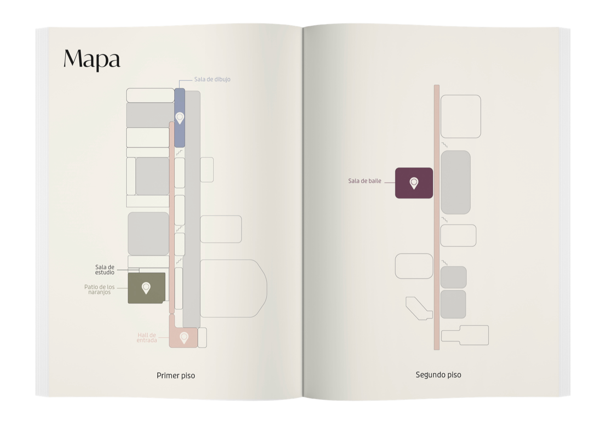

Librito de “Sentir el CCR”
La editorial fue pensada como una bitácora–librito que acompaña y estructura toda una experiencia del recorrido por el Centro Cultural Recoleta, funcionando tanto como guía de registro personal. Decidí trabajar este formato porque me interesaba que el proyecto no se viviera solo en el espacio físico, sino que también dejara una huella tangible, reflexiva y propia en cada visitante.
La editorial ordena el recorrido, contextualiza cada actividad y propone pausas de lectura y escritura que invitan a salir del modo automático, reforzando la idea de “desconectar para conectar”.
A nivel conceptual, el diseño editorial traduce el objetivo general del proyecto —reconectar con el cuerpo, la mente y el entorno— a través de una estética calma, sensorial y progresiva, donde cada sección dialoga con el espacio que representa. Así, el librito es una extensión del recorrido: un objeto que articula todas las instancias del proyecto y convierte la experiencia colectiva en una vivencia consciente, personal y recordable
3 año - Laboratorio de diseño 5